Mapping the public and private returns to
Enhanced Rock Weathering in Sub-Saharan Africa
A spatially explicit, decomposed profitability model that asks where each return justifies deployment, and where neither suffices alone yet together they do.
ERW pays the farmer twice.
Spreading finely ground basalt on cropland couples two value streams that are usually separate:
Alkalinity neutralizes soil acidity like agricultural lime, raising yields. Accrues to the farmer.
Weathering durably removes atmospheric CO₂, monetizable through voluntary carbon markets (VCM).
Central question: where does each return justify deployment, and where does neither suffice alone, yet together they do?
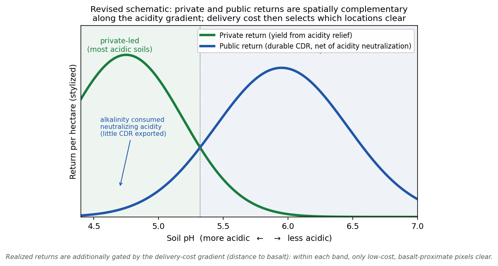
Six research questions.
Where does the private (yield) return alone justify ERW investment?
Where does the public (carbon) return alone justify it?
Where do the two coincide, the intersection?
Where does neither stream alone suffice, but the combined margin is positive?
How robust is the deployable geography to parameter assumptions?
What would shift the public (carbon) envelope outward?
Q4 is the central result; Q5 and Q6 define the robust core and the levers on the carbon case.
A decomposed per-pixel gross margin.
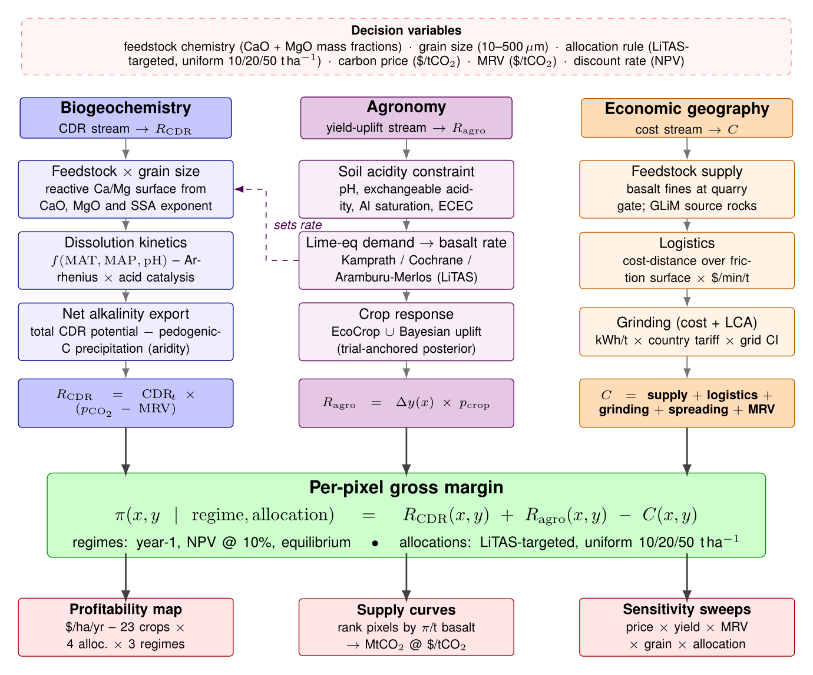
- Three streams. Agronomy (yield uplift), biogeochemistry (durable CDR), and a fully decomposed delivered cost.
- Resolution. ~0.083° grid × 44 SSA countries × 23 SPAM crops, area-weighted to each pixel.
- Decision object. Each pixel is classified by which stream(s) make the margin positive, not a single supply curve.
- Regimes. Year-1, NPV @ 10%, and equilibrium steady state (headline).
Public data layers behind every pixel.
| Layer | Source | What it supplies |
|---|---|---|
| Soil | SoilGrids | pH, ECEC, texture on cropland |
| Crops | SPAM v2 | 23 crop distributions & production |
| Agronomy | EcoCrop | crop pH-suitability response |
| Feedstock | GLiM | basalt source geology |
| Logistics | MAP friction | travel-time delivered-cost surface |
| Climate | WorldClim | temperature & moisture for weathering |
| Prices | FAOSTAT | 2016–20 producer-price medians |
| Lime req. | LiTAS | lime-equivalent dose (targeting) |
| Carbonate | Merlos / Kamprath | acidity sink for net-export |
The assumption sets
Five modeling choices govern every result: delivered cost, carbon price, net-export CDR accounting, an over-liming private penalty, and kinetic weathering saturation.
Cost is dominated by transport, a real lever.
Grinding + feedstock + freight + spreading + MRV, built up per pixel from the friction surface.
Delivered cost rises steeply with travel time; remote acid soils are priced out even where agronomy is strong.
Electrified / solar-assisted haulage cuts variable transport cost; a ~25–40% reduction visibly expands the viable frontier.
A per-tonne monitoring cost m is netted from the carbon price (see Assumption 2).
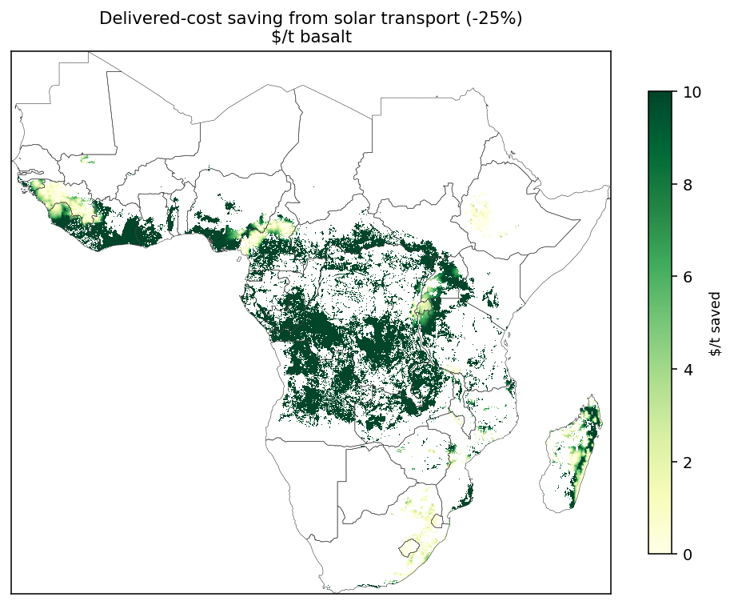
Delivered basalt cost, decomposed.
| Component | Cost per t basalt | Type | Basis / source |
|---|---|---|---|
| Quarry-gate feedstock | $10 / t | fixed | basalt fines (aggregate by-product) |
| Grinding (50 µm) | 19.4 kWh/t × local tariff (≈$1.9/t) | fixed * | Strefler et al. 2018 energy curve |
| Transport (haulage) | travel-time × $0.04/min/t | variable | 30 t truck over MAP friction surface |
| Spreading | $8 / t | fixed | on-farm application |
| Delivered cost / t | quarry + grinding + transport + spreading | = sum | the delivered $/t consumed per pixel |
| MRV (netted separately) | $20 / tCO₂ | per tCO₂ | netted from carbon price; low end of the $15–71/tCO₂ range (Mercer et al. 2024) |
* Grinding cost varies with the country electricity tariff. Transport is the only spatially varying term: it drives where ERW is deployable. Life-cycle CO₂ of grinding, transport, and spreading is separately deducted from gross removal.
The carbon return uses a net VCM price.
p = VCM carbon price ($/tCO₂) · m = per-tonne MRV cost
Baseline today’s price is $150/tCO₂, but we sweep a full price ladder. Price, MRV and delivered cost move the public envelope through a single ratio, (p − m)/c; the only other lever is durable removal per tonne (Results).
At $150 the durable public envelope is 1.95 Mha (11.1% of treated cropland); under a uniform-20 dose it widens to 3.95 Mha (12.1%), because the lime-requirement dose is CDR-minimal by construction.
Public envelope grows with price · equilibrium, targeted
| $/tCO₂ | Public Mha | % treated | Durable CDR (Mt) |
|---|---|---|---|
| $100 | 0.49 | 2.8% | 2.2 |
| $150 | 1.95 | 11.1% | 5.6 |
| $250 | 2.88 | 16.4% | 7.0 |
| $350 | 8.35 | 47.5% | 17.5 |
| $500 | 13.42 | 76.4% | 23.3 |
Credit only carbon that is durably exported.
F = 0.88 tCO₂ per tCaCO₃-eq · S = acidity sink (standing / maintenance)
Alkalinity spent neutralizing soil acidity re-releases its CO₂, exactly as agricultural lime does, so it must be deducted. A first-order sequential bound.
≈ 70% of credited removal is cut at first application once acidity neutralization is netted out. Durable removal is largely a steady-state phenomenon (equilibrium retention 77–90%), which is why the headline uses the equilibrium regime.
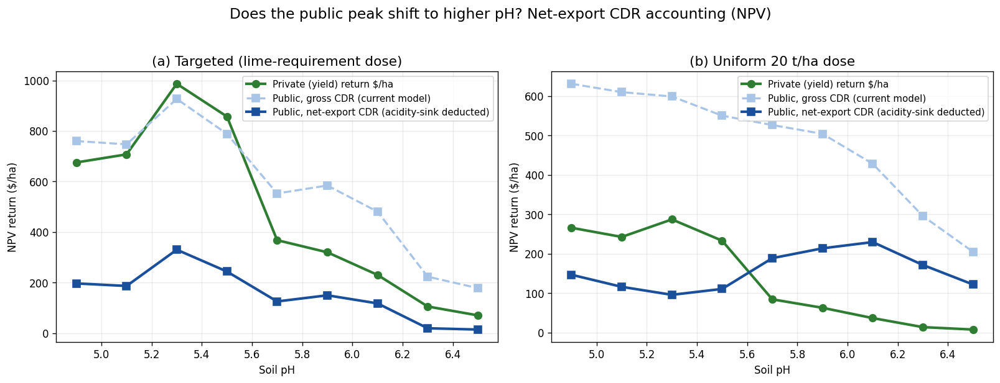
Too much alkalinity can depress yield.
Beyond the lime requirement, pH is pushed past the crop optimum; the EcoCrop response applies a yield haircut at the post-application pH.
pH change is damped by soil buffering (β = kβ·ECEC); reacted alkalinity A = gross CDR / F.
Concentrated on high uniform doses. Central estimate trims the targeted private return only modestly (−7%, band 6–10%); at uniform-50 the central hit is 20% with a 3–99% band.
A low–high band over (kβ, realized-alkalinity) is carried; the uniform-50 case is where it bites hardest.
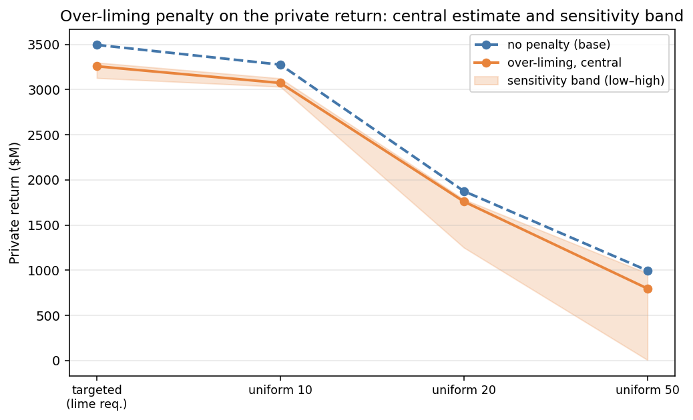
Weathering reacts less-than-linearly with dose.
Effective reacted tonnage saturates in applied dose D, normalized to the Lewis (2021) 50 t/ha reference (sat = 1 there). Reported as a band over Kd.
Saturation makes CDR concave in dose (giving an interior optimum), but it does not drive the public envelope to zero. Below the 50 t/ha reference, per-tonne reactivity is higher, so at targeted doses durable CDR actually rises. What binds the carbon case is MAC > price, not kinetics.
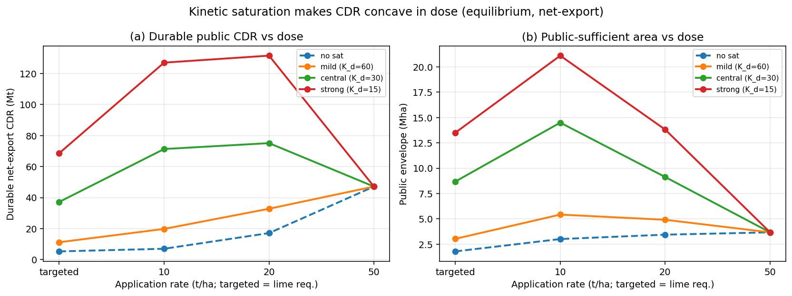
Temporal regimes × allocation rules.
Two axes are swept alongside the assumption sets; the headline is equilibrium, net-export: targeted leads the private and intersection geography, uniform-20 the carbon case. Kinetics: Arrhenius (Ea = 68.8 kJ/mol) · pH optimum 6.0 (2026-09 basis).
Temporal regimes
Allocation rules
Establishment dose vs. steady-state maintenance.
Full annual yield benefit is realized every year once soils are held at target.
(establishment)
(maintenance)
Bar height ∝ basalt applied that period, charged at its full delivered cost.
Full annual yield vs the fully-costed maintenance top-up, once soils are at target. Private envelope: ≈ $3.5 B yield for ≈ $1.74 B rock (~2:1 per cycle). Excludes the establishment dose.
One-time full lime-equivalent dose: larger upfront cost, and durable carbon largely collapses (alkalinity first pays down the standing acidity debt). Reported separately as the establishment / upper-bound contrast.
Headline figures are steady-state annual: full yield against a fully-costed recurring dose. The upfront establishment investment is captured in the year-1 regime, not folded into the equilibrium ratio.
Results
Envelopes and the combined-only band · durable carbon and marginal abatement cost · what shifts the public frontier · optimal rates · the robust core geography.
A five-way pixel classification.

Private-sufficient · Ragro − C > 0
Public-sufficient · RCDR − C > 0
Intersection · both hold at the same pixel
Combined-only · neither alone, but GM > 0
Neither · GM ≤ 0, not deployable
Where yield alone pays.
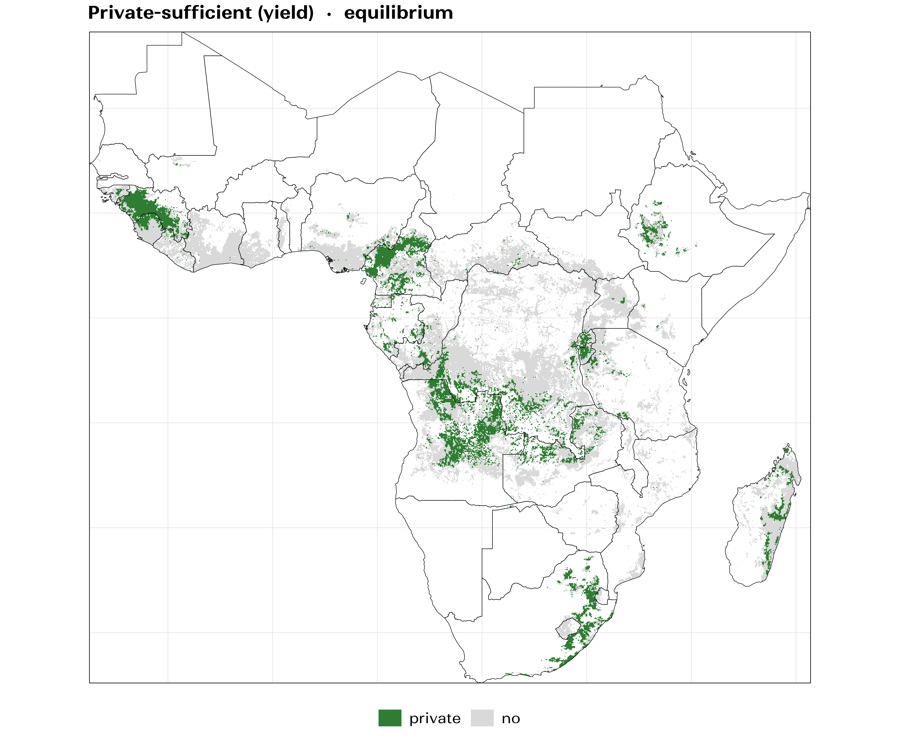
Land where the agronomic return covers the full delivered cost with no carbon credit at all.
The largest single envelope under the targeted dose. But it is a minority of acid cropland: most viable land needs more than yield to pencil.
Where carbon alone pays (durably).
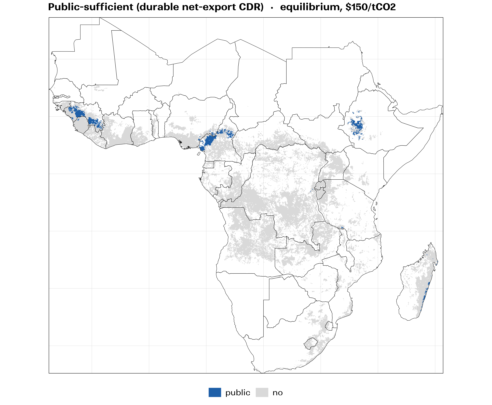
Land where durable, net-export CDR at $150/tCO₂ covers cost with no yield benefit.
Smaller than the private envelope, and price-conditional. Net-export accounting and today’s VCM price keep the carbon-only case tightly bound, the reason the combined case matters.
The combined-only band is the policy object.
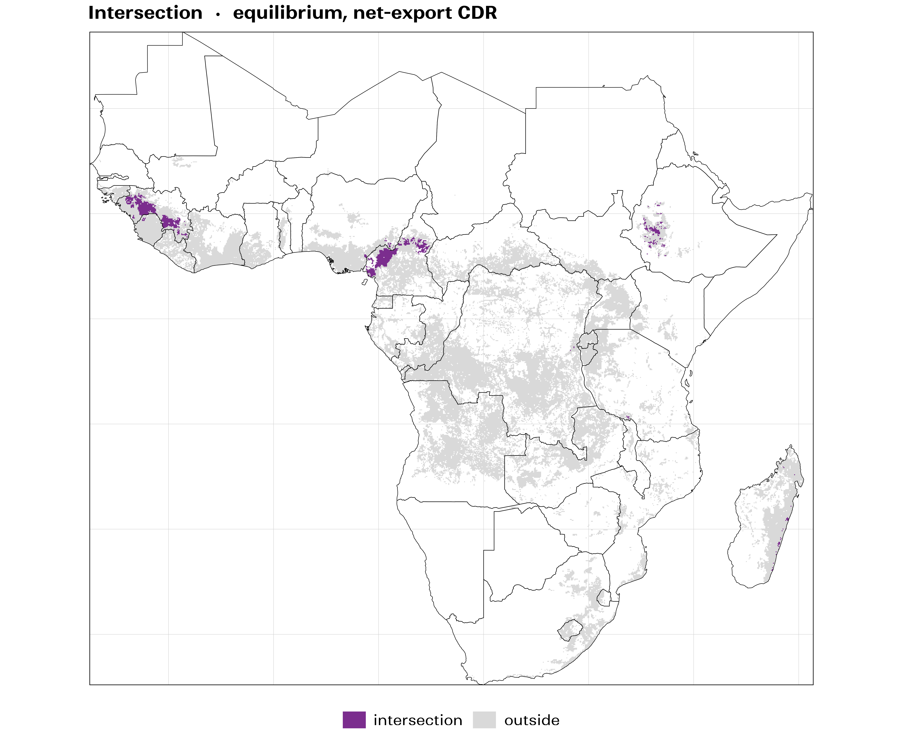
Neither the yield return nor the carbon return alone covers cost, yet together the margin is positive.
The economic point: voluntary carbon finance is not a bonus on an already-profitable practice; it is the marginal revenue that unlocks an otherwise-unprofitable, yield-improving investment.
Marginal abatement cost, not kinetics.
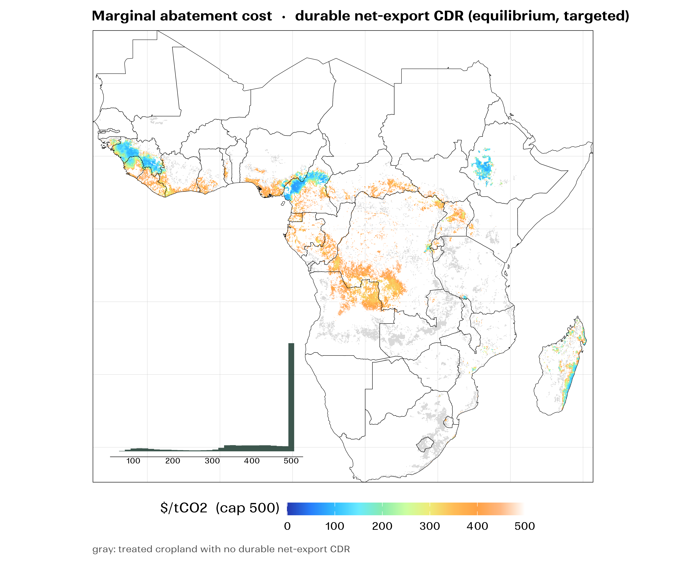
MAC = delivered cost per tonne of rock ÷ durable CDR per tonne. The public envelope is exactly the land where MAC < net price (p − m).
So the carbon case is limited by how much CO₂ a tonne of rock verifiably removes, the largest and least-resolved lever, and the clear field-calibration priority.
What shifts the public envelope outward.
Public area climbs from 2.8% of treated cropland at $100 to 76% at $500. The most direct lever.
Transport-cost reductions (e.g. solar haulage) lower MAC pixel-by-pixel; they act through the same (p − m)/c ratio as price. See Assumption 1.
Raising verified removal per tonne cuts MAC directly, and super-linearly: doubling the rate widens the uniform-20 public envelope ~6×. Kinetic saturation is second-order here.
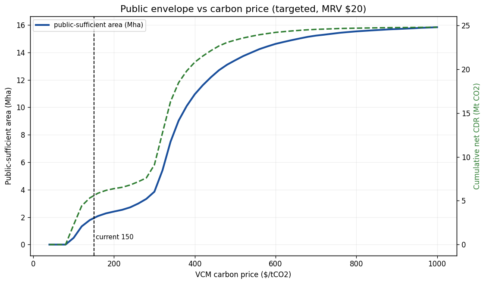
Each objective has an interior optimum.
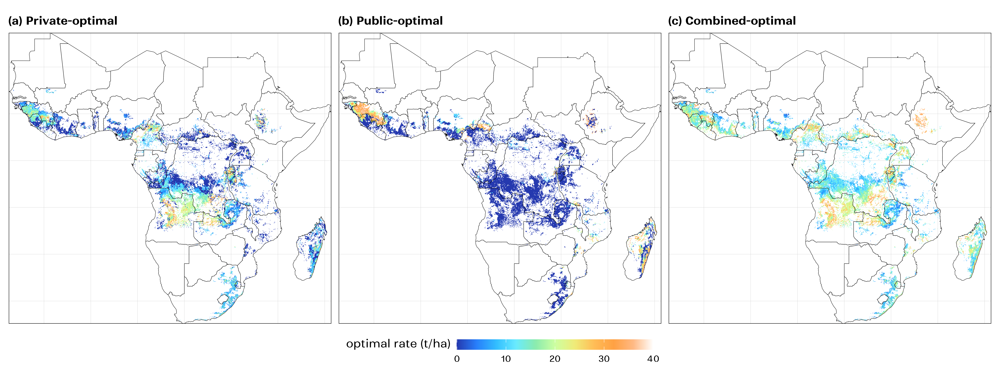
With both refinements, each per-pixel objective is concave, so a pixel-specific optimal rate exists for the private, public, and combined margins.
The combined optimum is moderate (typically well below blanket-high uniform doses): enough over-application to earn extra carbon, but not so much that over-liming and saturation erode the return.
A defensible priority geography.

Intersecting the envelope across the plausible parameter grid isolates land that stays viable under most assumptions.
This is the geography one would deploy first, and the base to expand as price rises or cost falls.
ERW is a coupled agronomic-and-carbon proposition.
The two returns rarely each suffice alone
But together they make a meaningful area of SSA cropland profitable that neither would, the 2.7 Mha combined-only band.
Carbon finance is the margin, not a bonus
On most viable land, VCM revenue is what unlocks a yield-improving investment. That reframes ERW away from a pure CDR supply curve.
The binding constraint is durable CDR per tonne
Net-export accounting cuts first-application removal ~70%; the area-weighted median MAC is $330 (targeted) / $276 (uniform-20). The price–cost ratio and verified removal per tonne are the two structural levers.
Treating it as coupled changes the answer
It changes both where to deploy first (the robust core) and what to invest in to expand it (field calibration of removal).
Caveats and where we go next.
Caveats
Priorities
Field calibration of durable removal per tonne is the single highest-value input; it sets MAC and the whole public case.
Not yet modeled
Tenure and who finances the upfront cost, compaction / N₂O effects, and country-level credit eligibility (Article 6).
Farm counts
Based on national average holding sizes; order-of-magnitude.
Next
Registry-grade accounting
Align the net-export bound with VCM methodology counterfactuals: liming substitution, financial-additionality screens.
Optimal-rate maps
Fold the pixel-specific private and combined optimal-rate maps into the manuscript.
Share & collaborate
The repo is on GitHub; the interactive envelope explorer reproduces every lever of this analysis in one self-contained HTML file.
Thank you for
your interest!
Mapping the public and private returns to
Enhanced Rock Weathering in Sub-Saharan Africa
B. H. Gebrekidan · J. Chamberlin
CIMMYT · working draft for Agricultural Economics